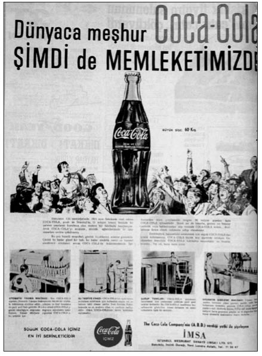

C-Ç
Chester İmtiyazı (1920’li yıllarda büyük ümit bağlanan fakat hayata geçirilememiş bir proje): Lozan Konferansı’na ara verilen bir zamanda, Türkiye’de olumlu bir hava esiyordu. Bunun nedeni, Türkiye ve Musul-Kerkük bölgesinde demiryolu ve maden ayrıcalıkları elde etmeye çalışan Amiral Chester’ın başını çektiği Amerikan sermaye grubuyla bir anlaşmanın sağlanmış olmasıydı. Chester Projesi, iki ayrı anlaşmaya dayanıyordu. Birinci anlaşmaya göre, Türkiye’nin doğusu ve Musul-Ker-kük bölgesini Karadeniz ve Akdeniz’de birer limana bağlayacak 4 bin 400 km demiryolu ve iki liman yapımı karşılığında, hatların, limanların ve demiryolu güzergâhların-daki 40 kilometrelik şeritler içinde kalan petrol dâhil her türlü yer altı kaynağının işletilmesi, 99 yıl için Amerikan grubuna bırakılıyordu. Grup, Türkiye’de birçok vergi muafiyetinden ve diğer kolaylıklardan yararlanacaktı. İkinci anlaşma, Türkiye’ye tarım makinaları ve gereçleri ithalatının Amerikan grubunun tekeline verilmesiyle ilgiliydi.
Amerika’nın daha barış imzalanmadan başrole geçmesi Avrupalıların bütün hesaplarını alt üst etmişti. Çünkü, tüm Avrupa devletlerinin, “Türkiye’yi iktisadi baskı altında tutmak ve iktisadi menfaatlere aykırı bir barış imza ettirmek” yolunda niyetleri, Chester Projesi’yle suya düşüyordu. Amerika’nın Türkiye üstünde “siyasal ihtiraslarının bulunmadığı”, bu nedenle “Türkiye’nin çekinmeden yardım alabileceği tek ülke olduğu” görüşünün Kemalist liderler arasındaki yaygınlığının da etkisiyle, Türkiye’de kısa süren bir coşku havası yaşandı. Aslında projenin bazı eleştirilecek yanları vardı. Proje, 99 yıllık imtiyaz süresinin uzunluğu, maden çıkarmak için tanınan 40 kilometrelik şeridin çok geniş olduğu ve Türklerin elinde bulunacak madenlerin demiryolundan çok uzakta kalacağı gibi nedenlerle eleştiriliyordu. Ancak bütün bu olumsuzluklara rağmen, projeye büyük umutlar bağlanmıştı. Örneğin, İktisat Bakanı Mahmut Esat (Bozkurt) Bey, bu girişimi ülkenin makine devrine geçişinin başlangıcı olarak görüyordu ve konuyla ilgili olarak basına şu demeci vermişti:
“Chester Projesi’yle memlekete 400 milyon liralık bir ecnebi sermayesi girecektir. Memleketimizin hukukuna ve memleketimizin kanunlarına saygılı herhangi bir ecnebi sermayesine katiyen düşman olmadığımıza bundan daha kuvvetli kanıt olabilir mi? Düşman kaynaklarından çıkan bu iftiraların içe ve dışa kesinlikle yalanlanmasını rica ediyorum.” (aktaran Ökçün: 1968, s. 9)
Basın ve kamuoyunda yapılan tartışmalardan sonra proje, 9 Nisan 1923’te TBMM’de kabul edildi. Projenin kabulü içeride olduğu gibi dışarıda da büyük yankı uyandırdı. İngiltere, Musul petrolleri ile Samsun Liman İnşaa-tı’nın; Fransa, Sivas-Samsun Demiryolu imtiyazının bu anlaşmayla ihlal edildiğini sert bir dille eleştirmekteydi. Bu sırada yaşanan başka bir gelişme de projenin geleceğini tehlikeye attı. Sonuçlanan Lozan Barışı’yla, projenin odak noktasını teşkil eden Musul meselesinin çözümü daha sonraki bir zamana bırakılınca sermayedar grubu yatırımı artık cazip bulmamaya başladı. Zaten yabancı sermayenin de büyük paraları, geniş ve nüfusu pek az olan bir ülkeye demiryolu yapmak için gömmeye kalkışması beklenemezdi. Hükümet, 1923’ün son günlerinde yeterli finansmanı bulamadığı gerekçesiyle anlaşmayı feshetti. Böylece en karanlık günlerde gönüllere ferahlık veren ve Amerika’nın yardımıyla yurdun kısa zamanda “cennete çevrilmesi ümidiyle” ilgisi olan “tatlı rüya” tamamıyla söndü. Lozan Konferansı’nın kesintiye uğradığı sıralarda, bu proje Ankara tarafından bir manevra vasıtası olarak ustaca kullanıldı. Döneme ilişkin yapılan yorumlara göre, İkinci Lozan Konferansı’nın Türkiye’nin lehine uygun bir şekilde sona ermesinde ciddi etkileri oldu.
Con Ahmet’in Devridaim Makinesi (Başarılı olsaydı, Türkiye’yi sıçratacak önemli bir deneme):
Cumhuriyet yokluklar içinde kurulmuştu ve kalkınma hamleleri yaparak kısa zamanda gelişmek istiyordu. Kalkınma hamlesi de özel teşebbüs eliyle yapılacaktı. Bu nedenle ilk yıllarda siyasal iktidar, girişimciliğe ve araştırmaya önem veriyor ve sonuçlarının başarısız olacağını bildiği hâlde bu yönde yapılan girişimleri destekliyordu. Afyon-karahisarlı Con Ahmet’in başarısız Zatülhareke denemesi de bunlardan biriydi. Con Ahmet, kendi kendine hareket eden, enerji üreten ya da enerjisiz çalışan bir makine yaptığını ileri sürmüştü. Kendisine bu iddiasını kanıtlaması için imkân sağlanmış fakat Con Ahmet’in Zatülhareke’si bir türlü hareket etmemişti. Onun bu denemesinin başarısız olması üzerine Zatülhareke halk arasında ‘hiçbir işe yaramayan buluşlar’ için kullanılan bir deyim hâline geldi. 2000’li yıllarda Erke Dönergeci gündeme geldiğinde de, aletin bir türlü kamuoyunun karşısına çıkarılamaması nedeniyle, Erke’nin buluşunun da Con Ahmet’in Zatülhare-ke’si gibi başarısız bir çalışma olduğu iddia edilecekti.
Coca Cola mı, Cola Coca mı? (Coca Cola değil Cola Coca): Türklerin pratik akılları ve cinlikleri literatüre daha geçmedi, ama bu konudaki girişimleri herkes tarafından bilinir. Coca Cola konusunda da bu söylediklerimizi doğrulayan şöyle bir olay yaşandı: Coca Cola, Türkiye’ye geldiği ilk yıllarda süratli bir şekilde büyümeyi planlıyordu. Fakat bir sorun vardı. Uyanık bir Türk vatandaşı, Cola Coca diye bir marka uydurup Coca Cola’nın şişesini taklit ederek pazarı alt üst etmişti. Sonunda Coca Cola yetkilileri işe el koyarak sorunu çözdü. Eskilerin Coca Cola’ya neden ‘Cola Coca’ dediği sanırım şimdi daha iyi anlaşılıyor.

Coca Cola’nın Türkiye’ye ilk geldiği yıllarda uyanık bir Türk vatandaşı, Cola Coca diye bir marka uydurup Coca Cola’nın şişesini taklit ederek pazarı alt üst etmişti.
Cumhuriyet’i Afişleyen Adam (Grafik Ustası İhap Hulusi’ye verilen bir ad): Grafik tasarım sanatının öncüsü İhap Hulusi Görey, Türk reklamcılığının üstadı ve afiş sanatının Türkiye’deki ilk temsilcisiydi. Görey, yaptığı çalışmalarla genç Türkiye Cumhuriyeti’nin kurumlaşmasına önemli katkı sağlayan sanatçılardan biriydi. Ender Merter’e göre, yazı ve çizginin yeni birlikteliğini Türkiye’ye ilk taşıyan kişi olarak bugüne özgü tanıtım renkliliği, ilk kez onun yaratıcı fırçasıyla kâğıda damladı. Fırçadan “mouse”a uzanan bu yol, Türkiye’de grafik sanatı ve reklamcılığın nasıl bir aşama kaydettiğini çok net bir şekilde gözler önüne sermesi açısından son derece anlamlıydı. İşte Merter’in ağzından İhap Hulusi:
“O kusursuz bir disiplin içindeki siyah beyaz grafikler... Tanıtımını yaptığı ürüne insanı bağlayan, mesajı bir şimşek gibi beyne çakan, renkçiliği ve çizgiciliği içinde barındıran afişler... Urbası, kasketi, şalvarı, yazması ve ağzı burnuyla Türkiye’nin insanları... Zanaate sanat bu kadar katılır.” (Merter, 2003, s. 13)
İhap Hulusi Görey, yaptığı çalışmalarla Türk afiş sanatını geliştiren öncü bir isim oldu. Hulusi, kendisi için bir afişte en önemli öğenin “buluş” olduğuna inanıyordu. Ona göre afiş, seyredenlerin ilgisini çekmeli ve düşündürmeliydi. 1980’lerde yaptığı bir röportajda, dönemin eğilimlerini eleştirerek yapılan afişleri beğenmediğini belirtmişti. Halka hitap etmediğini ve ilgi çekmediğini, sözle çizginin birleşmediğini söylüyordu. Ona göre, afişin başarıya ulaşabilmesi için buluşa ihtiyaç vardı ve buluş her reklamın vazgeçilmeziydi.
Grafik tasarım sanatının öncüsü İhap Hulusi Görey, Türk reklamcılığının üstadı ve afiş sanatının Türkiye’deki ilk temsilcisi oldu.
Çağ Atlayan Türkiye (Turgut Özal’ın en meşhur sözü): 1853’te Rus Çarı I. Nikola’nın, “Hasta Adam” olarak tanımladığı Türkiye, asırlardır tek şeyin özlemini duyar: O da “çağ atlamak”tır. Yani ekonomik olarak gelişmiş diğer ülkelerle eşit seviyede olmayı hep arzu eder. Aslında bu özlemi son 200 yıldır yaşamaktadır. Tanzimat’tan bu yana Türkiye, gelişmiş ülkelerle aynı seviyeye gelebilmek için birçok şey yapmıştır. Daha önce bünyesinde olmayan ilk şirketleri (kapitalist üretim modeli) kurmuş, yurtdışına öğrenci göndermiş, Batı tipi saraylar yaptırmış, fesi kenara atmış, kravat takmış ve bunun gibi değişimlerin gösterdiği gibi hep Batı tipi bir ülke olmanın özlemini duymuştur. Türk modernleşme süreci tartışmasında, işi siyaset adamı Abdullah Cevdet gibi daha da ileriye götürenler bile olmuştur. Cevdet’in “Amerika’dan ve Avrupa’dan damızlık erkekler getirip ırkımızı ıslah etmemiz gereklidir” şeklindeki sözlerini genlerimize yerleşen “aşağılık kompleksinin” hayat bulan beyanları olarak değerlendirmek gerekir. Gelişmiş ülkeler karşısındaki bu aşağılık kompleksi nedeniyle, uzunca bir süre çağ atlamayı büyük bir heyecanla bekleyip durduk. Ta ki Turgut Özal dönemine kadar.
Özal, Başbakan ve Cumhurbaşkanı olarak, 1980 sonrasına icraatlarıyla damgasını vurmuş biriydi. 1980’li yıllarda Özal, “ekonomideki bütün tabuları yıkmakta” kararlıydı. Konuyla ilgili en önemli düzenlemelerden ilki, 29 Aralık 1983 günü uygulamaya kondu. Türk Parasını Koruma Kanunu değiştirilerek döviz taşımak suç olmaktan çıkarılıp, döviz kullanımı serbest hâle getirildi. Onun döneminde, yatırımlar ön plana çıkarken, ekonominin vitrininde de yeni düzenlemeler göze çarpar. Köylere ulaşan elektrik, otomatik telefon görüşmeleri, kese kâğıdından naylon poşete geçiş, ekonomik düzenlemenin “devrim niteliğindeki” araçları olarak algılanıyordu. 1983’ün ilk aylarında video ve kaset ithal yasağı kaldırıldı. Yapılan bir düzenlemeyle pil, akümülatör ve deterjanın ithal edilebilmesi kabul edildi. Yine ithal malı ilk Mercedes’in Türkiye’ye geti-rilmesiyse görülmeye değerdi. İthal edilen sekiz Mercedes gelmeden alıcılarının belli olduğu açıklanmıştı. Aynı dönemde, ilk paralı otoyol da açıldı. Yapımına 11 yıl önce başlanan ve 40 kilometrelik bölümü tamamlanan Anadolu otoyolunun Kirazlıyalı-İzmit kesimi hizmete girdi.
1980 sonrasında ekonomide yaşanan ani ve hızlı değişim toplumsal hayata da yansımakta gecikmedi. Özal, Türkiye’ye dolarlı hayatı yerleştirdi. İthal peynir, Çikita muz, Maxvell ve Nescafe gibi hazır kahveler, Marlboro ve Kent gibi yabancı sigaralar dönemin Türkiyesi’nin tanıştığı ilk mallar oldu. Yurtdışından gelen mallar, serbest piyasa ekonomisinin rekabete dayalı anlayışı, piyasayı canlandırdı. Bu yıllarda yaşanan kimi olaylar, dudak ısırtacak cinstendir. 1984’te gerçekleştirilen et ithali de bunlardan biridir. Federal Almanya’dan ithal edilen 18 ton et, mezbahada kurban kesilerek karşılandı. Et piyasaya çıkarıldığında kapışılırken, et kuyruklarında kavgalar yaşandı. Türkiye ekonomi tarihinde önemli izler bırakan Turgut Özal, gerçekleştirdiği icraatlarını “Çağ atlayan Türkiye” şeklinde yorumluyordu. Döviz taşımanın suç olmaktan çıkarılması, Türk lirasının konvertibil edilmesi, Keban Barajı gelir ortaklığı senetlerinin satışa sunulması, KDV’ye dayalı hayat, bedelsiz ithalatla vitrinleri dolduran lüks tüketim malları, Özal’ın “Çağ atlayan Türkiye”sinin en önemli düzenlemeleriydi.
Çankaya’nın Şişmanı İşçi Düşmanı: (Bkz. Yerli Walesa).
Çiller’in ABD’deki Mal Varlığı (Çiller hakkında en çok tartışılan konu): DYP’nin eski lideri Tansu Çil-ler’in mal varlığı ve hakkında açılan soruşturma dosyaları uzunca bir süre Türkiye siyasetinin en önemli gündem maddelerini oluşturdu. Çiller’in ABD’deki mal varlığı da tartışılan başlıca konulardan biriydi. 1994’te gazeteci Turan Yavuz, Özer ve Tansu Çiller’in ABD’de otel, alışveriş merkezi ve villadan oluşan, gayrimenkullerinin olduğunu duyurdu. Bu malların Çiller’in ekonomiden sorumlu devlet bakanlığı döneminde edinildiğinin basında yer alması büyük bir tartışma başlattı. Bunların Çiller’in başbakanlığa aday olduğu 8 Haziran 1993’teki mal beyanında yer almadığı da ortaya çıktı. Bunun üzerine DYP lideri, söz konusu gayrimenkuller Marsan Holding tarafından satın alındığı için kişisel mal bildiriminde bulunmadığını açıkladı. Tansu Çiller, ANAP’ın önergesinin TBMM’de görüşülmesinden bir gün önce açıkladığı mal varlığı listesinde 1973’te babasından miras kalan 437 bin liranın (o günkü kurla 29 bin dolar) en verimli alanlarda işletilerek 677 milyar liraya (22 milyon dolar) çıkarıldığını öne sürdü ve eşiyle sahip oldukları şirketlerin vergileriyle ilgili iddialara ise bir açıklama getirmedi. Çiller, 1995 seçimlerinden önce ABD’deki malvarlığını getirip Şehit Anaları Vakfı’na bağışlayacağını açıkladı. Ancak yıllar geçmesine rağmen bu sözünü yerine getirme konusunda herhangi bir girişimde bulunmadı.